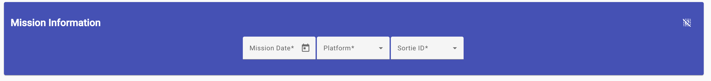

After Login/Empty Mission

After Login, the application will take you to an empty mission entry view.
You can also reach this point by clicking on the "Missions" on the navigation
bar to the left.
I need to take a little more time to point out changes to the toolbar and
the rest of the common view.
- The Toolbar has added a few icons and the Lock icon has changed.
- On the far left, the three horizontal lines allows you to show/not
show the naviation bar on the left side.
- The picture/profile icon on the right allows you to edit your
personal information (Name and email address), plus change your
password. I will describe this a little later on the profile edit
help page.
- Your first name is displayed between the profile and lock icons.
- The lock icon has changed to closed or locked position. You click
on this icon to log out of the application.
- Lastly, the navigation bar/menu is displayed on the left side of the
window to allow you to move quickly to other areas of the application.
Don't worry if the "Admin" choice is a lighter shade of gray. This
just means you aren't a designated administrator for the application.
Login View
Edit A Mission